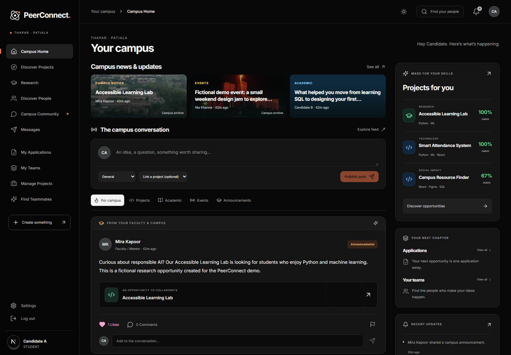

PEERCONNECT · COMPLETE WINDOWS PROJECT
Everything in one folder.
Open it with one double-click.
Full frontend and backend source, database schema and content, original requirements, tests, documentation and the software needed to run it on Windows x64.
Open the website
- Open this folder in Windows File Explorer.
- Double-click
OPEN-WEBSITE.cmd. - Wait for READY. Chrome opens automatically.
- Keep the black window open while using the site.
No terminal commands or separate Node/database installation are needed for this bundle. The first opening prepares a private database automatically.
Student: student.a@thapar.edu
Teacher: faculty@thapar.edu
Password: CampusDemo!2026
When finished, click the black window and press Ctrl+C. If Chrome doesn't open, read WEBSITE-LINK.txt and paste its address into Chrome. Use that address: the port can change when another website is running. The site runs on this laptop, not a public domain.
Show your teacher
Open TEACHER-GUIDE.md in a text editor for the complete explanation, source map and demonstration sequence.
| Part | Where it is |
|---|
| Frontend | app/, components/, app/midnight.css |
| Backend/API | app/api/, lib/service.ts, lib/auth.ts |
| Database | prisma/schema.prisma, prisma/migrations/, handoff/database/ |
| Matching algorithm | lib/matching.ts |
| Tests and evidence | tests/, e2e/, docs/ |
| Original requirements | handoff/originals/ |
| Installed software | node_modules/, runtime/ |
How it was made
Next.js, React and TypeScript provide the interface and server. Prisma connects the backend to a real PostgreSQL database. Matching uses an explicit skill-overlap formula, not an AI score. Development was assisted by ChatGPT/Codex; third-party libraries retain their own licenses.
Architecture · Database design · Requirements mapping · Verification and limits

Keep everything together
Copy the whole PeerConnect-Complete folder to keep the easy launcher working. If transferring the ZIP, use Extract All before opening the launcher. This prepared runtime is for Windows x64; other systems need the source setup in README.md.
Private academic demo. Includes local account hashes and content; avoid public uploading. Original source and reports are included. Real email delivery and public hosting are not configured.